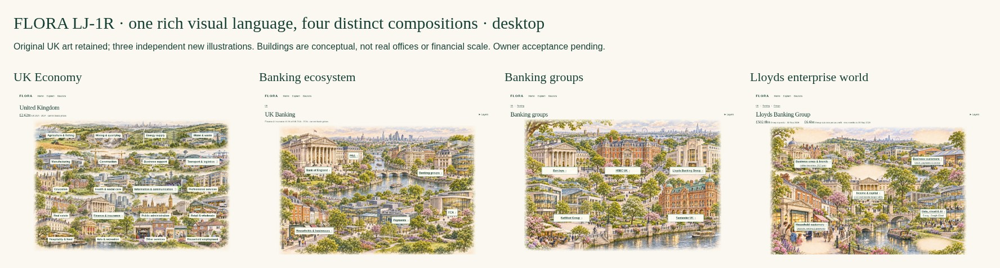

FLORA · Rich Visual Continuity
Four-level design correction · owner acceptance pending.
Open the current four-level prototype →
Comparisons, evidence audit and owner review · Download offline demo

Historical rejected LJ-1
Original design and historical previews. The five-state original is not the current journey.